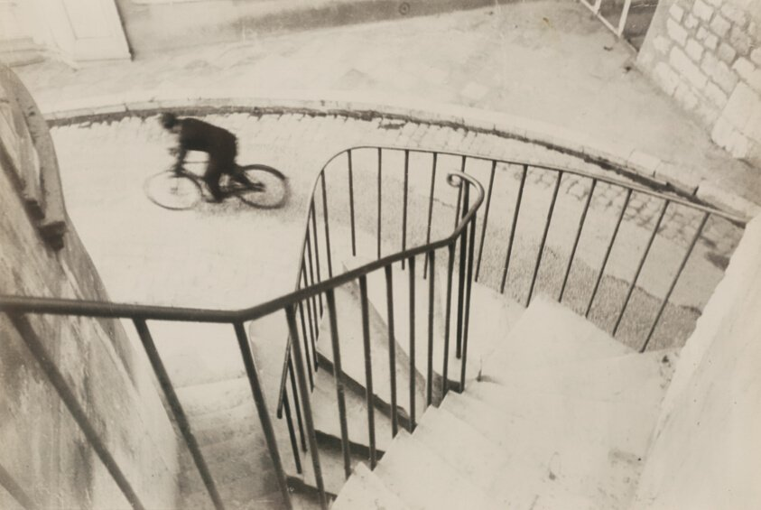

Hyères, France
Henri Cartier-Bresson · 1932, printed 1930/39 · Gelatin silver print · 19.8 × 29.5 cm · Art Institute of Chicago
In copyright. Look and learn: shown for study, not for download.
Cartier-Bresson took this before he was a professional photographer, with the Leica and 50 mm lens he had bought in Marseilles after nearly dying of blackwater fever in the Côte d'Ivoire. He painted every shiny part of the camera black to make himself harder to notice. The print uses the whole negative, uncropped and unretouched. On the back he wrote his name and his address on the rue de Lisbonne in Paris, and it came to Chicago as a gift from Jean and Julien Levy.